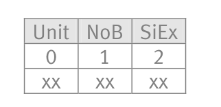

Implementation¶
Hardware¶
The hardware in this project is pretty generic except of the embedded device in the meter. The server can be any linux server with the ability to run an ntp server, web server, a mysql database and a MQTT broker. The wifi hot-spots can be of any kind and is not configured by Nabovarme.
The embedded device was chosen based on these features:
- Price
- Onboard wifi
- Power consumption
- Onboard flash
- Clock speed
- Ease of development
The following embedded solutions were explored:
- Arduino with cc3000 wifi modem
- Raspberry pi with usb wifi modem
- Esp8266 microcontroller (RISC)
Based on the research i created the following table:
| Solution | Price | Onboard wifi | Transmit Power consumption | Onboard Flash | Clock speed | Development |
|---|---|---|---|---|---|---|
| Arduino with cc 3000 | ca. 75$ (40 + 35) | No | ca. 270mA, (20 + 250) | 16kb | 16Mhz | C like, easy |
| RaspberryPi, edimax usb wifi | 77 (52 + 25) | No |
(210 + 40) |
None | 700Mhz | Linux, easy |
| Esp8266 | 2,5 $ | Yes | 215mA | 512kb | 80Mhz | C sdk, moderate |
sources
I concluded from the data above that the ESP8266 with a price of 2.5$, onboard flash and 80 mhz clock speed was ideal as a platform for the project.
ESP8266¶
The esp8266 module family and the esp8266-01 i am using in this project. Note also the esp8266-07 with fcc stamps.
The ESP8266 is a new microcontroller with onboard wifi sold in modules including a 512 kb spi flash. It was introduced to the global market by Espressif in 2014 and has since gained a large following in hacker and maker circles around the world.
Espressif has released an sdk for the ESP8266 and have kept updating the sdk for the bimonthly. The sdk has some binary blobs but a project called Esp-open-sdk tries to replace these with open source alternatives. The binary blobs make it a little dificult to develop software for the esp since you cant research the inner workings of specific core api calls.
The sdk is based on freertos and give you a task handler asn other abstract os features. Most of its core api calls are callback based which means you have to think asynchronously when developing.
Esp8266 family¶
I chose to use the esp8266-01 in this project because it was ready made and included header pins for easy prototyping. The esp-01 however is the most sparsely broken out module of the family. The esp8266 chip itself features a lengthy list of gpios including uarts, i2c, spi etc. While all these features exist aboard the esp-01 only a few a broken out, namlely two gpio’s and a single uart. This however is enough to implement my prototype.
Esp8266-07
This module will propably be the one that the next prototype will use. Reasons are:
- Faraday cage
- cheramic antenna
- connector for external antenna
- more gpios broken out
The external antenna ability would provide much needed better wifi receptance in the indoor environments where the meters are installed.
PCB¶
The kamstrup meters are designed with a space for extension boards. (see the image in start of design section) A pcb layout was created in order to host the ESP8266-01 and facilitate uart connectivity with the kamstrup bus as well as providing power from the builtin psu.
The pcb was uploaded to the pcb manufacturer “oshpark.com” where it is released as open hardware. Oshpark creates cheap pcb’s with their purple signature tint. Eagle cad free edition was used for the pcb layout and the design files are in the github repository.

The pcb kayout for the esp8266-01 as hosted on oshpark
Footnotes
| [1] | https://nurdspace.nl/ESP8266 |
| [2] | http://raspi.tv/2014/pihut-wifi-dongle-vs-edimax-power-usage |
| [3] | https://github.com/esp8266/esp8266-wiki/wiki/W25Q40BVNIG |
| [4] | http://www.arduino.cc/en/Main/ArduinoBoardDuemilanove |
Software¶
Software had to be developed to extract the samples from the Kamstrup meter and send them to a central server In order to do this a few core protocols must be known.
Protocols¶
I have chosen to document the kamstrup multical 601 protocol since its not available in the public domain and protected by an NDA so i regard the work done on freeing the protocol as a public service. The MQTT protocol is also documented more loosely since its freely available. DNS and ntp are not documented since they not represent major parts of the system and are documented many places.
Kamstrup multical 601¶
The kamstrup multical 601 protocol is a serial protocol with 1200 bits per second. The protocol is a request-response protocol where the data is encoded in many frames where each is 8 bits.
The data frame is based on the OSI model. In this protocol, only three layers of the OSI model are used. These are the physical layer, data link and the application layer. The figure below show how each of the layers (shown as shaded) is related to the data frame.

Physical layer
Data is transmitted byte wise in a binary data format. 8 data bit represent one byte of data. The physical layer uses ’Byte stuffing’ to compensate for byte values reserved as start, stop and acknowledge. The method is to substitute the reserved bytes values with a pair of byte values.
Data link layer
The destination address is included in order to prepare a future enhanced version of the protocol. For heat meters the destination address is 3Fh. The logger top module use 7Fh and the logger base module use BFh. Included in the data link layer is a CRC with reference to the CCITT-standard using the polynomial 1021h. Only deviation from the standard is the initial value, which is 0000h instead of FFFFh. The CRC result is calculated for destination address, CID and data. CRC is transmitted with MSByte first and LSByte last.
I decided to include a table of all possible crc checksums for the given length in my code so i did not have to compute it on each frame. In the *user/kmp.c file you can see the checksum table.
Application layer
Most data in the application layer is handled in a KMP register format. You use command id’s (CID’s) to tell the kamstrup which registers you are interested in.
The kamstrup specifies a variable lenght register format. This format includes three bytes show below:
- The first byte defines which unit the value is in
- the second byte defines the byte length of the value
- the third byte tells about the sign and exponent of the value.
Kamstrup implements floating numbers by the use of the following equation:

SI tells if the value is negative, if SI is 1 then the value is negative. The SE tells if the value is a decimal fraction, if SE is 1 then the value is less than zero. The integer represents the value before translated into the floating point value.
Because the Kamstrup protocol only uses base 10 floating points, later computations are easily done by modifying the point index by dividing with 10.
In order to compute power of values i needed a power function. This exist in libmath. But i didnt want to link all libmath into this project just to gain a power function, and when i did it also gave compile errors for lack of flash. So i wrote my own power function, this can be seen in user/kmp.c - kmp_pow.
Libc printf does not have its own string formatter for floating point numbers. So a function had to be written in order to translate the received numbers into strings ready for transmission.
MQTT¶
MQTT is a Client Server publish/subscribe messaging transport protocol. It is light weight, open, simple, and designed so as to be easy to implement. These characteristics make it ideal for use in many situations, including constrained environments such as for communication in Machine to Machine (M2M) and Internet of Things (IoT) contexts where a small code footprint is required and/or network bandwidth is at a premium. [5]
MQTT vs HTTP
Why bother with MQTT when you have HTTP? The answer is compression and asynchronous messaging. HTTP v 1.1 is synchronous which means it works in a request-response model. You can ask a question and wait for the answer. An added inconvenience is that only the client is able to ask questions.
The MQTT protocol implements a channel based mssaging platform where you publish and subscribe to channels and best of all you can implement certain degrees of quality control where you retransmit or buffer messages until they are delivered to clients that have been offline.
MQTT is also binary vs HTTPS heavy aschii headers. This is really good since we want as compressed a packet as possible in order to minimize power usage.
Footnotes
| [5] | http://docs.oasis-open.org/mqtt/mqtt/v3.1.1/mqtt-v3.1.1.html |
Esp8266 firmware¶
The firmware has the following main objectives:
- When booted it should enter a grace period and let the user config which access point to join
- After a grace period it should lookup the current time from an ntp server and save it to its rtc and then enter sample mode
- Everything in the firmware is timer based.
Config mode¶

Diagram shows the successfull configuration of an esp8266 using a smartphone within the graceperiod
This mode features a grace period where the esp will act as an access point and serve a html site where the user can edit which access point the esp will join later on. The config mode access point is protected by wpa encryption and credentials are generated when flashing a new esp.
If the user changes the prefered access point of the esp it will be saved using sdk functions for saving and loading configs. These api calls go to the binary blobs and are not documented further. The configs are permanently saved.
After the graceperiod ends the esp will set its wifi mode to station and try to connect to saved ssid with saved credentials.
Ntp transition¶

Diagram shows how we use the builtin dns to lookup ntp servers, request a timestamp and store it
When grace period ends, the esp will transition into sample mode. This transition features a continous try at getting a timestamp from a predefined ntp server. The esp will stay in this transition until it successfully receives the timestamp which it then will save in ram.
The timestamp is saved in a resolution of seconds and a timer based on the rtc increments the stored timestamp every second. In this way we have a guaranteed unix timestamp that holds its time down to the rated precision of the RTC.
Of course we never reach the precision threshold where seconds are dropped since we update the stored timestamp on a frequency of an hour plus random minutes between 0 and 60. The random minutes guarantee that all meters not ask for NTP time at the same time.
Both the RTC and the integer we store the unix timestamp in are 32 bit. This means that the RTC can only hold about 1 hour and eleven minutes which affects max sleep time. And the timestamp we increment every second will overflow in 2038, this is not a problem since something better propably has replaced the system by then.
Sample mode¶

Sample mode is about sampling from the kamstrup meter and reporting the samples using MQTT. A timer runs every minute and sends a kmp request to the kamstrup meter. This breaks the idea of a request-response protocol but we have not experienced any kamstrup meters sending the same sample twice, so the idea of a malformed response is experienced, therefore it was chosen to sample at a fixed frequency and asynchronously listen for the responses.
When ever a response is received, it is formatted into a string for transmission by MQTT. It is then stored in the MQTT queue (circular buffer) and MQTT will try tro transmit the sample until it either is successfully tansmitted or is pushed out the queue by new samples filling the queue. It could be temptating to store the raw samples in the queue and decode them when transmitting because they allready are compressed but we need to compute crc on them, and maybe retransmit kmp request, before storing them in the queue.
It is a part of the plan to downscale the sample frequency and introduce a deep sleep break between samples. This deep sleep period would heavily reduce the power usage of the esp. The esp sdk comes with a standard way of doing this that implies the use of free user memory in the rtc. This memory can be used to store a timestamp. If you know beforehand how long you sleep then when you wake you can just append that to the stored timestamp and you have the current time again without ntp. The esp rtc overflows at 32 bit microseconds which means that you can max sleep ca. 71.58 seconds before having to wake again. If you want to sleep longer you would have to wake up append sleep period to stored timestamp and then sleep again. The esp has the ability to define which mode to wake up in so you actually tell it to wake up without wifi which makes power usage even lower with extended sleep.
Vizualisation¶
A prototype was created for visualizing the data created by the meter unit.
The visualization is provided by the same server running the MQTT broker and sql database.
A Perl script serves a html site where a javascript generated graph is populated with latest entries from the sql database.
The graph is zoomable in both x and y and a screenshot is shown below:

When you hold the mouse above a point in the graph you can observe the different data fields.
Here is a zoomed in version

As you can see the sample resolution is 1 minute intervals. And the flow is has a climax around 22:00 in the evening.